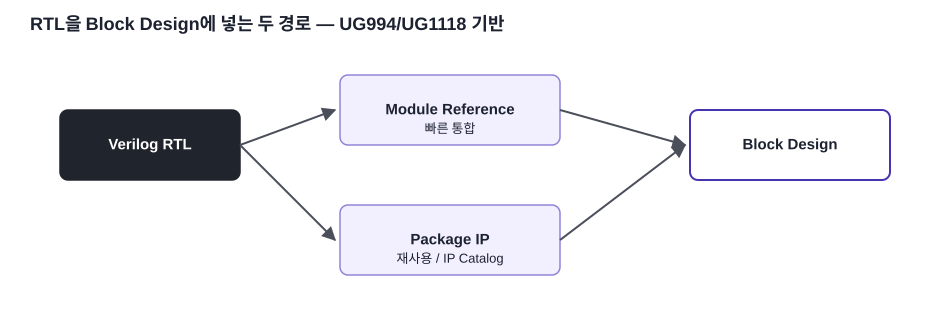
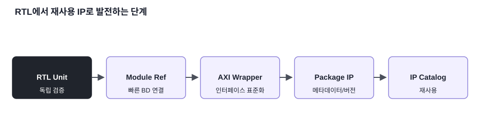

빠른 통합
Module Reference는 RTL을 빠르게 Block Design에 추가합니다.
FPGA / SoC 개념 · 08
기존 Verilog RTL을 Block Design에 직접 넣는 Module Reference와 재사용 가능한 Package IP 방식을 비교합니다.
Module Reference는 RTL을 빠르게 Block Design에 추가합니다.
Package IP는 IP Catalog를 통한 관리와 재사용에 적합합니다.
기존 Peripheral RTL을 SoC용 Custom IP로 발전시킵니다.

UG994는 Module Reference를 Verilog/VHDL Source의 Module 또는 Entity를 Packaging 과정 없이 Block Design에 직접 추가하는 기능으로 설명합니다. 빠르게 RTL을 연결해 실험할 때 유리합니다.
UG1118의 IP Packager를 사용하면 현재 Project 또는 지정한 RTL File을 IP로 Packaging할 수 있습니다. Port/Interface, Parameter, Address Map, Driver/Software 연결 정보를 정리해 재사용 가능한 IP로 만들 수 있습니다.

Top Module에 기능을 몰아넣지 않고 Controller/IP를 독립 모듈로 유지해 온 설계 원칙이 Custom IP 단계에서 그대로 재사용됩니다.
본문의 기술 내용과 교육용 재작성 그림은 아래 공식 문서를 기준으로 검증했습니다. 원문 전체를 복제하지 않고 핵심 구조를 학습용으로 재구성했습니다.